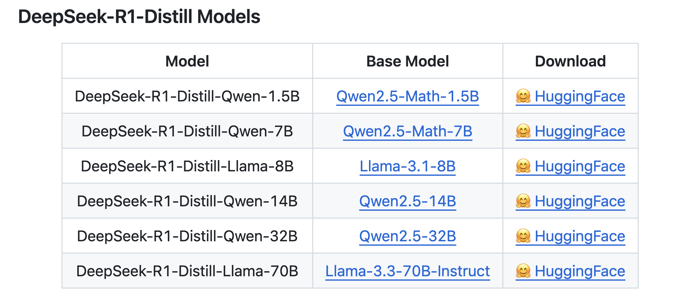
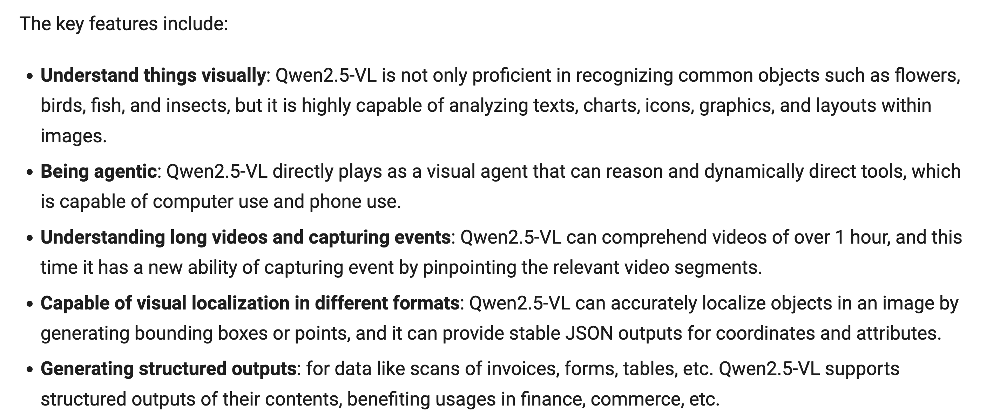
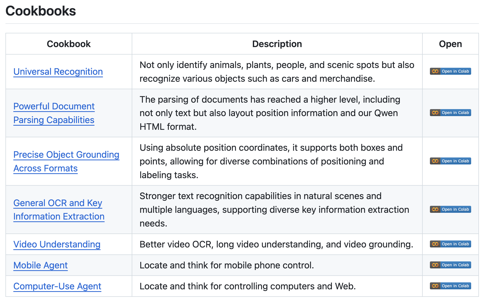

import modal
from modal import Image, enter
app = modal.App("deepseek-janus-pro")
image = (
Image.debian_slim(python_version="3.11")
.run_commands(
"apt-get update && apt-get install -y git",
"git clone https://github.com/deepseek-ai/Janus.git",
"cd Janus && pip install -e .",
)
.env({"HF_HUB_CACHE": "/cache"})
)
cache_vol = modal.Volume.from_name("hf-hub-cache", create_if_missing=True)
@app.cls(
image=image,
volumes={"/cache": cache_vol},
gpu="A100",
cpu=4,
timeout=600,
container_idle_timeout=300,
)
class Model:
@enter()
def setup(self):
import torch
from janus.models import MultiModalityCausalLM, VLChatProcessor
from transformers import AutoModelForCausalLM
# specify the path to the model
model_path = "deepseek-ai/Janus-Pro-7B"
self.vl_chat_processor: VLChatProcessor = VLChatProcessor.from_pretrained(model_path)
self.tokenizer = self.vl_chat_processor.tokenizer
self.vl_gpt: MultiModalityCausalLM = AutoModelForCausalLM.from_pretrained(model_path, trust_remote_code=True)
self.vl_gpt = self.vl_gpt.to(torch.bfloat16).cuda().eval()
def url_to_base64(self, url: str) -> str:
import base64
from io import BytesIO
import requests
from PIL import Image
# Download the image from URL
response = requests.get(url)
# Convert to PIL Image first to ensure it's a valid JPEG
img = Image.open(BytesIO(response.content))
# Convert to RGB mode if it's not
if img.mode != "RGB":
img = img.convert("RGB")
# Save as JPEG to BytesIO
buffered = BytesIO()
img.save(buffered, format="JPEG")
# Convert to base64
img_base64 = base64.b64encode(buffered.getvalue()).decode("utf-8")
# Return in the format expected by Janus
return f"data:image/jpeg;base64,{img_base64}"
@modal.web_endpoint(method="POST", docs=True)
def text_and_image_to_text(self, data: dict):
from janus.utils.io import load_pil_images
content = data["content"]
image_url = data["image_url"]
base64_image = self.url_to_base64(image_url)
conversation = [
{
"role": "<|User|>",
"content": f"<image_placeholder>\n{content}",
"images": [base64_image],
},
{"role": "<|Assistant|>", "content": ""},
]
# load images and prepare for inputs
pil_images = load_pil_images(conversation)
prepare_inputs = self.vl_chat_processor(conversations=conversation, images=pil_images, force_batchify=True).to(self.vl_gpt.device)
# # run image encoder to get the image embeddings
inputs_embeds = self.vl_gpt.prepare_inputs_embeds(**prepare_inputs)
# # run the model to get the response
outputs = self.vl_gpt.language_model.generate(
inputs_embeds=inputs_embeds,
attention_mask=prepare_inputs.attention_mask,
pad_token_id=self.tokenizer.eos_token_id,
bos_token_id=self.tokenizer.bos_token_id,
eos_token_id=self.tokenizer.eos_token_id,
max_new_tokens=512 * 8,
do_sample=False,
use_cache=True,
)
answer = self.tokenizer.decode(outputs[0].cpu().tolist(), skip_special_tokens=True)
return answer
@modal.web_endpoint(method="POST", docs=True)
def text_to_image(self, data: dict):
import base64
from io import BytesIO
import numpy as np
import PIL.Image
import torch
from janus.models import MultiModalityCausalLM, VLChatProcessor
conversation = [
{
"role": "<|User|>",
"content": data["content"],
},
{"role": "<|Assistant|>", "content": ""},
]
sft_format = self.vl_chat_processor.apply_sft_template_for_multi_turn_prompts(
conversations=conversation,
sft_format=self.vl_chat_processor.sft_format,
system_prompt="",
)
prompt = sft_format + self.vl_chat_processor.image_start_tag
@torch.inference_mode()
def generate(
mmgpt: MultiModalityCausalLM,
vl_chat_processor: VLChatProcessor,
prompt: str,
temperature: float = 1,
parallel_size: int = 4,
cfg_weight: float = 5,
image_token_num_per_image: int = 576,
img_size: int = 384,
patch_size: int = 16,
):
input_ids = vl_chat_processor.tokenizer.encode(prompt)
input_ids = torch.LongTensor(input_ids)
tokens = torch.zeros((parallel_size * 2, len(input_ids)), dtype=torch.int).cuda()
for i in range(parallel_size * 2):
tokens[i, :] = input_ids
if i % 2 != 0:
tokens[i, 1:-1] = vl_chat_processor.pad_id
inputs_embeds = mmgpt.language_model.get_input_embeddings()(tokens)
generated_tokens = torch.zeros((parallel_size, image_token_num_per_image), dtype=torch.int).cuda()
for i in range(image_token_num_per_image):
outputs = mmgpt.language_model.model(
inputs_embeds=inputs_embeds, use_cache=True, past_key_values=outputs.past_key_values if i != 0 else None
)
hidden_states = outputs.last_hidden_state
logits = mmgpt.gen_head(hidden_states[:, -1, :])
logit_cond = logits[0::2, :]
logit_uncond = logits[1::2, :]
logits = logit_uncond + cfg_weight * (logit_cond - logit_uncond)
probs = torch.softmax(logits / temperature, dim=-1)
next_token = torch.multinomial(probs, num_samples=1)
generated_tokens[:, i] = next_token.squeeze(dim=-1)
next_token = torch.cat([next_token.unsqueeze(dim=1), next_token.unsqueeze(dim=1)], dim=1).view(-1)
img_embeds = mmgpt.prepare_gen_img_embeds(next_token)
inputs_embeds = img_embeds.unsqueeze(dim=1)
dec = mmgpt.gen_vision_model.decode_code(
generated_tokens.to(dtype=torch.int), shape=[parallel_size, 8, img_size // patch_size, img_size // patch_size]
)
dec = dec.to(torch.float32).cpu().numpy().transpose(0, 2, 3, 1)
dec = np.clip((dec + 1) / 2 * 255, 0, 255)
visual_img = np.zeros((parallel_size, img_size, img_size, 3), dtype=np.uint8)
visual_img[:, :, :] = dec
image_base64_list = []
for i in range(parallel_size):
img_buffer = BytesIO()
PIL.Image.fromarray(visual_img[i]).save(img_buffer, format="JPEG")
img_base64 = base64.b64encode(img_buffer.getvalue()).decode("utf-8")
image_base64_list.append(f"data:image/jpeg;base64,{img_base64}")
return image_base64_list
return generate(
self.vl_gpt,
self.vl_chat_processor,
prompt,
)Intro
The Chinese labs, DeepSeek and Alibaba’s Qwen, are releasing a lot of models. I wanted to quickly write down some notes so I can keep it all straight in my head.
DeepSeek
DeepSeek-R1
- Github - DeepSeek-R1
- Paper
- I use the DeepSeek Chat Platform to use it. The API platform is really good too!
- Trained via large-scale reinforcement learning (RL)
- Uses DeepSeek-V3-Base as the base model and then employs GRPO as the RL framework.
- What emerges first is DeepSeek-R1-Zero
- generates lots of chain of thought
- first open source research to show LLMs can develop reasoning capabilities purely through RL, without the need for SFT
- But has issues for practical use cases (poor readability, language mixing)
- Pipeline to develop DeepSeek-R1 using RL and SFT
- collect small amount of COT data for cold-start
- fine-tune DeepSeek-V3-Base on cold-start data
- apply RL just as in DeepSeek-R1-Zero
- apply SFT on top of RL
- This is the model we should use for practical use cases
- Distilled Models
- DeepSeek-R1 is the teacher model to generate 800K training samples
- fine-tune several smaller dense models using Qwen and Llama
- Blog post from Philipp Schmid -Mini-R1: Reproduce Deepseek R1 “aha moment“ a RL tutorial
- Good Tweet Summary here from Philipp Schmid


- The smaller distilled versions can be run locally through ollama for example —>
ollama run deepseek-r1. - Also check out the-illustrated-deepseek-r1 blog post
Janus-Pro
Running on Modal
Let’s create some endpoints with Modal to serve the 7B model. That’s the thing I love about Modal. I can just copy/paste the inference code from the repo and it just works.
Code
from io import BytesIO
import requests
from IPython.display import display
from janus_endpoint_inference import text_and_image_to_text, text_to_image
from PIL import Image
image_url = "https://fastly.picsum.photos/id/37/2000/1333.jpg?hmac=vpYLNsQZwU2szsZc4Uo17cW786vR0GEUVq4icaKopQI"
response = requests.get(image_url)
img = Image.open(BytesIO(response.content))
display(img)Here we send the above image to our deployed endpoint and ask it to describe the image.
Code
desc = text_and_image_to_text(image_url, "Give me a description of the image")
print(desc)The image depicts a serene coastal scene. In the foreground, there is lush green foliage with some red flowers. Beyond the greenery, the ocean stretches out, meeting the horizon under a cloudy sky. On the right side of the image, there is a rocky outcrop jutting into the water. The overall atmosphere is calm and peaceful, with a natural and untouched beauty.Next we take a prompt and send it to the other endpoint we created for text to image.
Code
prompt = "Serene coastal scene with lush green foliage and red flowers in the foreground, ocean stretching to the horizon under a cloudy sky, rocky outcrop on the right, calm and peaceful atmosphere, natural and untouched beauty, highly detailed and realistic."
for img in text_to_image(prompt):
display(img)I still think even flux-dev is better. I wrote about deploying flux to Modal in a previous post.
Qwen
The Qwen team has also been shipping to start the year off strong!
Qwen2.5 VL
I really loved Qwen2-VL and wrote about it previously here. Now we get an updated model!
- blog post
- repo
- model comes in three sizes: 3B, 7B, and 72B
- It sounds awesome. Check out these key points directly from the blog post:

- Okay, Qwen2.5 VL looks insanely feature rich. TBH, it deserves its own blog post.

Qwen2.5-1M
Qwen2.5-Max
Conclusion
I just wanted to write out some of these different models on one page. The DeepSeek-R1 model is really awesome. I have a lot to learn about the RL recipes. When it comes to the other models, I’m mostly excited about the Qwen2.5-VL model. Once I saw the different cookbook recipes for it, I suddenly realized it needs a separate blog post. I want to deploy it on Modal and create endpoints for all of its capabilities. I don’t think I will bother with DeepSeek Janus-Pro.